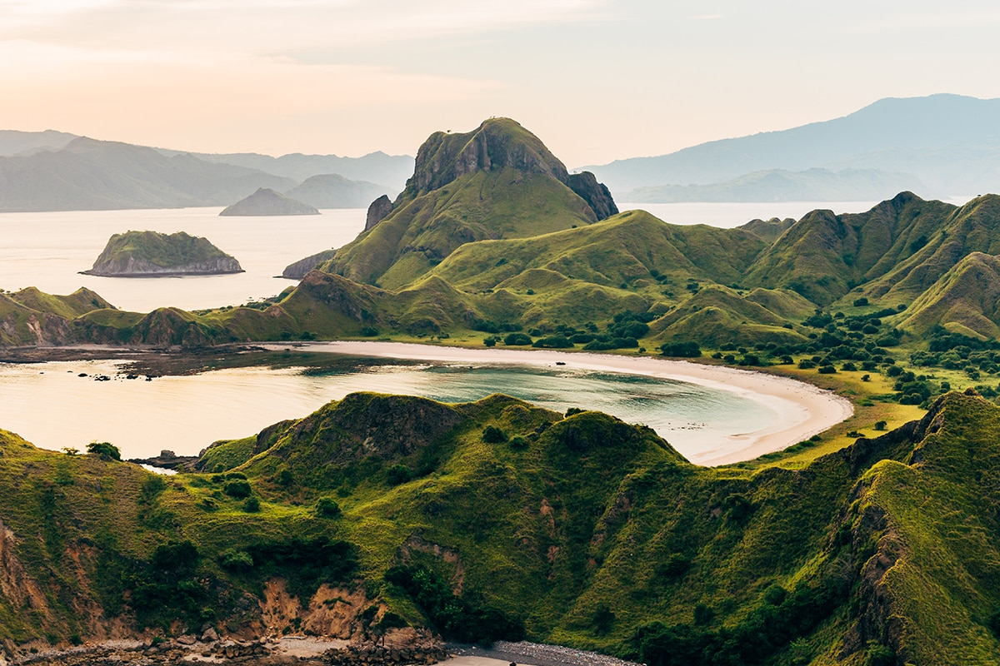
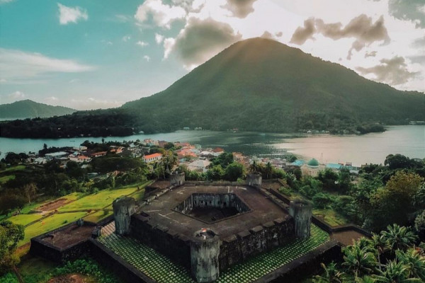
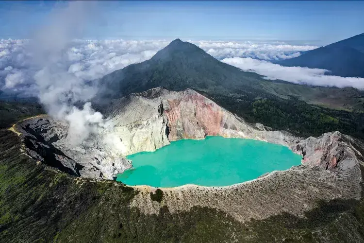
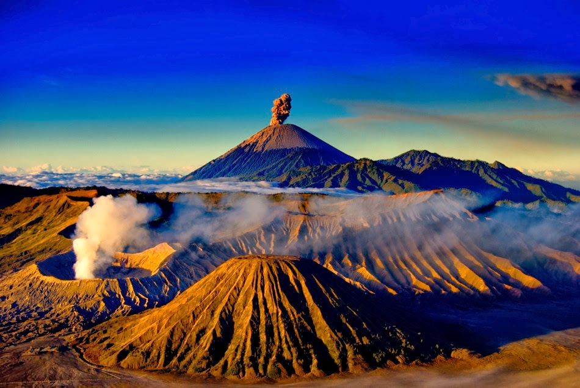
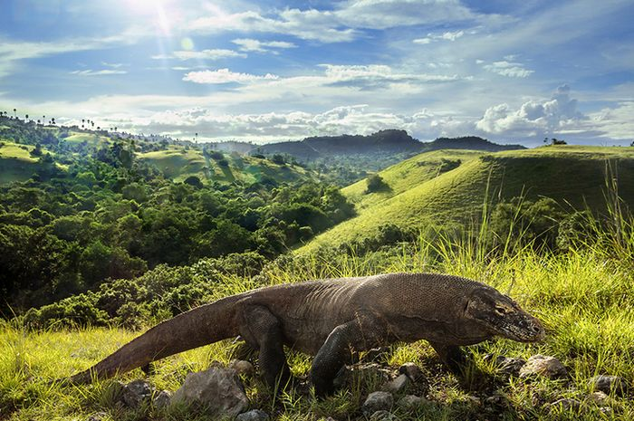
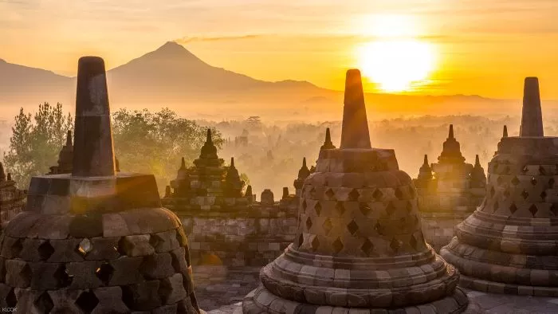
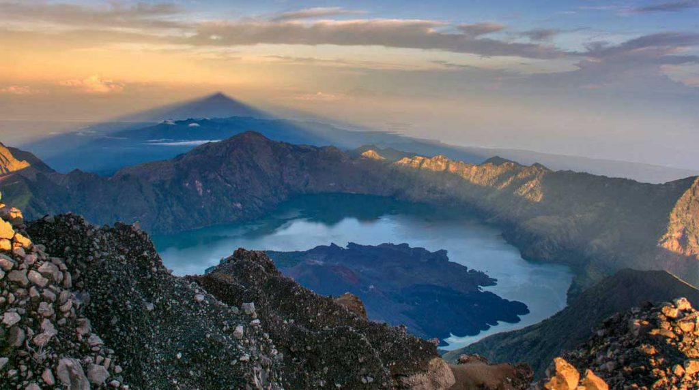

Indonesian Tourism
Explore the beauty of Indonesia, from its stunning landscapes to its vibrant culture
Pariwisata Indonesia
Indonesia memiliki beragam atraksi pariwisata yang menarik bagi para petualang, penggemar budaya, dan pecinta alam. Mulai dari candi ikonik Borobudur dan Prambanan di Yogyakarta hingga pantai-pantai cantik di Bali dan Lombok, setiap daerah menawarkan pengalaman yang unik.Indonesia menawarkan berbagai destinasi wisata menarik dari candi kuno hingga pantai-pantai eksotis, dengan seni dan budaya yang kaya serta alam yang memukau, menjadikannya tujuan yang sempurna untuk setiap jenis petualang.
|  |  |  |
Labuan BajoLabuan Bajo adalah kota kecil yang terletak di ujung barat Pulau Flores, bagian dari provinsi Nusa Tenggara Timur, Indonesia. Kota ini terkenal sebagai gerbang menuju Taman Nasional Komodo, habitat asli dari komodo, varanus terbesar di dunia. Labuan Bajo merupakan destinasi populer bagi wisatawan yang ingin menjelajahi keindahan alam bawah lautnya yang kaya akan terumbu karang dan kehidupan laut yang beragam. Selain itu, Labuan Bajo juga menjadi basis untuk melakukan perjalanan ke Pulau Rinca dan Pulau Komodo untuk menyaksikan komodo dalam habitat alaminya. |
Banda NeiraBanda Neira adalah sebuah pulau kecil yang terletak di Kepulauan Banda, Provinsi Maluku, Indonesia. Pulau ini dikenal karena sejarahnya yang kaya sebagai pusat perdagangan rempah-rempah pada abad ke-16 hingga ke-18, terutama cengkeh dan pala. Salah satu landmark terkenal di Banda Neira adalah Benteng Belgica, yang dibangun oleh Belanda pada abad ke-17 sebagai benteng pertahanan dari serangan musuh.Pulau Banda Neira juga menawarkan pemandangan alam yang menakjubkan dengan pantai pasir putih, air laut yang jernih, dan kehidupan laut yang kaya. Pulau ini merupakan tujuan wisata yang menarik bagi pecinta sejarah, penggemar aktivitas menyelam, dan mereka yang mencari ketenangan di tengah keindahan alam |
Kawah IjenKawah Ijen adalah sebuah kawah gunung berapi kompleks yang terletak di Banyuwangi, Jawa Timur, Indonesia. Salah satu daya tarik utama Kawah Ijen adalah danau kawahnya yang terkenal dengan warna biru kehijauan yang spektakuler. Danau ini merupakan danau kawah terbesar di dunia berdasarkan volume air dalamnya. Kawah Ijen juga dikenal karena aktivitas blue fire yang hanya terlihat di malam hari, yang disebabkan oleh pembakaran belerang yang keluar dari kawah.Selain blue fire, Kawah Ijen juga menawarkan pemandangan alam yang menakjubkan dengan lanskap pegunungan yang hijau dan udara yang sejuk. Kawasan sekitar kawah juga merupakan tempat dimana para penambang belerang bekerja dengan cara tradisional, sehingga memberikan pengalaman yang unik bagi para pengunjung. |
|  |  |
 |
Taman Bromo Tengger SemeruPesta Rakyat Pasola adalah festival adat yang berasal dari Suku Sumba di Nusa Tenggara Timur, Indonesia. Festival ini melibatkan pertunjukan berkelompok berupa permainan jousting atau balapan bersama dengan menggunakan kuda dan lembing. Pasola diadakan setiap tahun pada bulan Februari atau Maret sebagai bagian dari upacara adat untuk merayakan musim panen padi dan menurut kepercayaan tradisional Sumba, juga sebagai bagian dari ritual yang bertujuan untuk menyucikan tanah dan menjaga kesejahteraan masyarakat. |
Raja AmpatUpacara Seren adalah tradisi adat Jawa Barat yang dilakukan untuk menyambut atau menutup masa tanam padi. Upacara ini merupakan bagian dari kepercayaan lokal yang menghormati dewi atau roh yang diyakini mengatur hasil panen dan kesuburan tanah. Seren biasanya melibatkan prosesi ritual, doa bersama, dan serangkaian upacara untuk menghormati dan memohon berkah dari roh tersebut. Tradisi ini merupakan contoh nyata dari kekayaan budaya dan spiritualitas masyarakat Jawa Barat. |
Taman Nasional KomodoUpacara adat Toraja merupakan serangkaian ritual yang kaya makna dari masyarakat Toraja di Sulawesi Selatan, Indonesia. Ritual ini melibatkan berbagai tahapan mulai dari persiapan hingga pelaksanaan yang sangat terstruktur dan penuh simbolisme. Salah satu upacara adat Toraja yang paling terkenal adalah Rambu Solo, atau sering disebut sebagai "upacara kematian" yang dilakukan untuk mengantarkan roh orang yang meninggal ke alam baka dengan penuh penghormatan dan upacara adat yang khusyuk. Selain Rambu Solo, masih banyak lagi upacara adat Toraja lainnya seperti Rambu Tuka, Rambu Siampe, dan Rambu Balu. Tradisi ini tidak hanya memperkuat ikatan sosial dalam masyarakat Toraja tetapi juga mencerminkan kompleksitas dan kekayaan budaya mereka yang telah berlangsung selama berabad-abad. |
|  |  |  |
Candi BorobudurCandi Borobudur adalah candi Buddha terbesar di dunia yang terletak di Magelang, Jawa Tengah, Indonesia. Candi ini dibangun pada abad ke-9 Masehi pada masa pemerintahan Wangsa Syailendra. Borobudur terdiri dari sembilan tingkat (tiga teras persegi) yang ditutupi oleh 72 stupa berlubang dan sebuah stupa besar di puncaknya. Relief-relief di dinding Borobudur menggambarkan ajaran Buddha, kehidupan sehari-hari di Jawa kuno, serta gambaran alam semesta menurut kosmologi Buddha.Candi Borobudur telah diakui sebagai Situs Warisan Dunia UNESCO dan menjadi salah satu destinasi wisata paling ikonik di Indonesia. Setiap tahunnya, ribuan pengunjung dari dalam dan luar negeri datang untuk mengagumi keindahan arsitektur serta makna filosofis dan spiritual yang terkandung di dalamnya. |
Taman Nasional Gunung RinjaniTaman Nasional Gunung Rinjani adalah kawasan konservasi alam yang terletak di Pulau Lombok, Nusa Tenggara Barat, Indonesia. Kawasan ini mencakup Gunung Rinjani, gunung berapi tertinggi kedua di Indonesia dengan puncaknya yang mencapai 3.726 meter di atas permukaan laut. Taman Nasional ini didirikan untuk melindungi keanekaragaman alam dan ekosistemnya, yang meliputi hutan hujan tropis, savana, dan danau kawah yang terkenal, seperti Danau Segara Anak.Gunung Rinjani merupakan tujuan pendakian yang populer di Indonesia, menarik ribuan pendaki setiap tahunnya. Pendakian Gunung Rinjani menawarkan pemandangan alam yang spektakuler, termasuk pemandangan Danau Segara Anak dan Gunung Barujari di tengahnya. Selain pendakian, Taman Nasional Gunung Rinjani juga menawarkan kegiatan seperti camping, trekking, dan wisata alam lainnya. |
Danau Toba & Pulau SamosirDanau Toba adalah danau vulkanik terbesar di dunia yang terletak di Provinsi Sumatera Utara, Indonesia. Danau ini terbentuk dari letusan super volcano sekitar 75.000 tahun yang lalu dan sejak itu menjadi salah satu destinasi wisata utama di Indonesia. Danau Toba dikelilingi oleh pemandangan alam yang indah, seperti pegunungan, bukit-bukit hijau, dan desa-desa tradisional Batak.Pulau Samosir adalah sebuah pulau yang terletak di tengah Danau Toba. Pulau ini dianggap sebagai pulau di dalam danau di dunia. Pulau Samosir merupakan pusat budaya Batak Toba dan terkenal dengan keindahan alamnya serta kebudayaan dan seni tradisionalnya. Beberapa tempat menarik di Pulau Samosir termasuk Huta Siallagan (Desa Tomok), di mana terdapat situs-situs sejarah dan makam raja-raja Batak. |